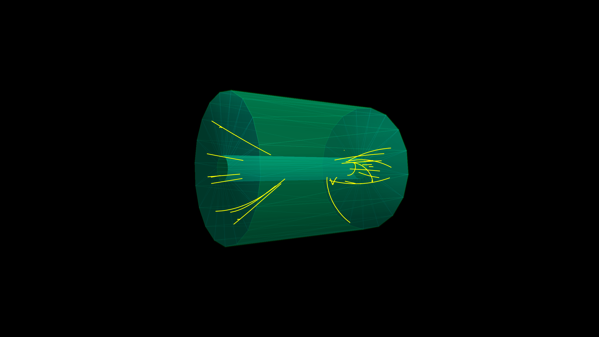
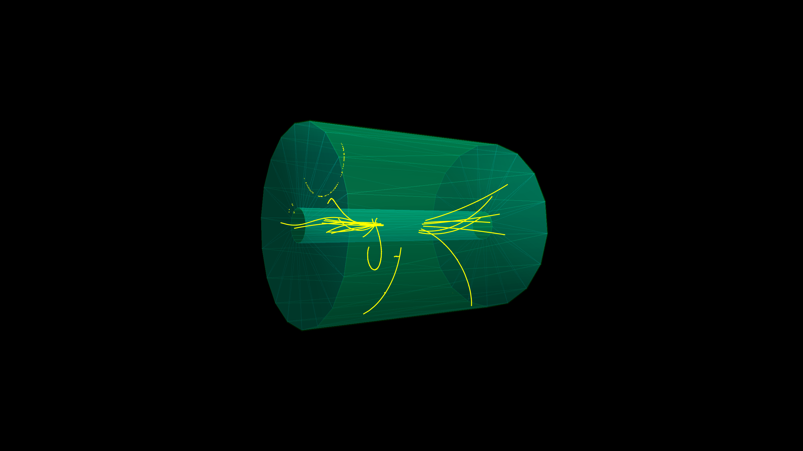

Simulation of the Aleph TPC
In this example we demonstrate how to connect the PYTHIA MC generator to a to a Geant4 application that implements a very simplistic model of the ALEPH TPC.
The TPC detector is a simple cylinder filled with a mixture of Argon and Methane gas inside an axial 1.5 tesla magnetic field. The primary particles are generated by PYTHIA8 with the the LEP collision settings.
You can also download this example as a Jupyter notebook and a plain Julia source file.
Table of contents
- Loading the necessary Julia modules
- Define the TPC Detector
- Magnetic Field initialization
- Primary Particle Generator
- Event Display
- Create the Application
- Run the Application
Loading the necessary Julia modules
Geant4andGeant4.SystemOfUnitsfor the Geant4 simulationParametersfor the parameter handling in the detector definitionPYTHIA8for the PYTHIA8 generator
using Geant4
using Geant4.SystemOfUnits
using Parameters
using PYTHIA8
# to force loading G4Vis extension we need to load the following modules
using CairoMakie, Rotations, IGLWrap_jll, LinearAlgebra
using PYTHIA8: px, py, pz
import DisplayAs: PNGDefine the TPC Detector
The TPC detector is a simple cylinder filled with a mixture of Ar and CH4 gas
using Geant4.SystemOfUnits: m, cm, mole,cm3The data structure AlephTPC is defined with the default detector parameters
@with_kw mutable struct AlephTPC <: G4JLDetector
totalL::Float64 = 4.4m # total length of the TPC
innerR::Float64 = 0.31m # inner radius of the TPC
outerR::Float64 = 1.8m # outer radius of the TPC
checkOverlaps::Bool = false # do check overlaps when creating the geometry
endMain.var"##230".AlephTPCThe function construct is defined to create the geometry of the TPC detector. It receives an instance of the AlephTPC structure and returns a pointer to the physical volume of the world.
function construct(det::AlephTPC)::CxxPtr{G4VPhysicalVolume}
(; totalL, innerR, outerR, checkOverlaps) = det
##---Materials----------------------------------------------------------------------------------
nist = G4NistManager!Instance()
m_Ar = FindOrBuildMaterial(nist, "G4_Ar")
m_CH₄ = FindOrBuildMaterial(nist, "G4_METHANE")
ArCH₄ = G4Material("ArCH₄", 3.491*mg/cm3, 2)
AddMaterial( ArCH₄, m_Ar, 0.91 )
AddMaterial( ArCH₄, m_CH₄,0.09 )
m_ArCH₄ = FindOrBuildMaterial(nist, "ArCH₄")
m_air = FindOrBuildMaterial(nist, "G4_AIR")
m_Al = FindOrBuildMaterial(nist, "G4_Al")
##---Volumes------------------------------------------------------------------------------------
worldZHalfLength = 1.1 * totalL/2
worldS = G4Box("world", worldZHalfLength, worldZHalfLength, worldZHalfLength)
worldLV = G4LogicalVolume(worldS, m_air, "World")
worldPV = G4PVPlacement(nothing, G4ThreeVector(), worldLV, "World", nothing, false, 0, checkOverlaps)
fcOuterS = G4Tubs("fcOuter", outerR, outerR + 1.8cm, totalL/2, 0, 2π)
fcOuterLV = G4LogicalVolume(fcOuterS, m_Al, "fcOuter")
fcInnerS = G4Tubs("fcInner", innerR - 0.8cm, innerR, totalL/2, 0, 2π)
fcInnerLV = G4LogicalVolume(fcInnerS, m_Al, "fcInner")
chamberS = G4Tubs("chamber", innerR, outerR, totalL/2, 0, 2π)
chamberLV = G4LogicalVolume(chamberS, m_ArCH₄, "chamber")
G4PVPlacement(nothing, G4ThreeVector(), fcOuterLV, "fcOuter", worldLV, false, 0, checkOverlaps)
G4PVPlacement(nothing, G4ThreeVector(), fcInnerLV, "fcInner", worldLV, false, 0, checkOverlaps)
G4PVPlacement(nothing, G4ThreeVector(), chamberLV, "chamber", worldLV, false, 0, checkOverlaps)
##SetUserLimits(chamberLV, G4UserLimits(5mm))
##---Visualization attributes------------------------------------------------------------------
boxVisAtt = G4VisAttributes(G4Colour(1.0, 1.0, 1.0, 0.0))
chamberVisAtt = G4VisAttributes(G4Colour(0.0, 1.0, 1.0, 0.2))
fcVisAtt = G4VisAttributes(G4Colour(0.0, 1.0, 0.0, 0.1))
SetVisAttributes(worldLV, boxVisAtt)
SetVisAttributes(chamberLV, chamberVisAtt)
SetVisAttributes(fcInnerLV, fcVisAtt)
SetVisAttributes(fcOuterLV, fcVisAtt)
##---Always return the physical world-------------------------------------------------------------
return worldPV
end
Geant4.getConstructor(::AlephTPC)::Function = constructFinally, the detector is created with the default parameters
tpc = AlephTPC() # create the detectorMain.var"##230".AlephTPC
totalL: Float64 4400.0
innerR: Float64 310.0
outerR: Float64 1800.0
checkOverlaps: Bool false
Magnetic Field initialization
bfield = G4JLUniformMagField(G4ThreeVector(0,0, 1.5tesla))Geant4.G4JLUniformMagField("UnifiormB", Geant4.G4JLUniformMagFieldData(G4ThreeVector(0.0,0.0,0.0015)), Geant4.var"#getfield!#33"(), Geant4.G4JLMagField[])Primary Particle Generator
@with_kw mutable struct PythiaGenerator <: G4JLGeneratorData
eCM::Float64 = 91.2*GeV
pythia = nothing
end
function LEPCollision()
data = PythiaGenerator()
function LEPinit(data::PythiaGenerator, app::G4JLApplication)
data.pythia = PYTHIA8.Pythia("", false)
data.pythia << "Beams:idA = -11" # positron
data.pythia << "Beams:idB = 11" # electron
data.pythia << "Beams:eCM = $(data.eCM/GeV)" # CM energy
data.pythia << "PDF:lepton = off" # no lepton PDFs
# Process: hadronic decays of Z0. Initialize. Histogram.
data.pythia << "WeakSingleBoson:ffbar2gmZ = on"
data.pythia << "23:onMode = off"
data.pythia << "23:onIfAny = 1 2 3 4 5"
# If Pythia fails to initialize, exit with error.
data.pythia |> init || error("Pythia initialization failed")
end
function LEPgenerate(g4evt::G4Event, data::PythiaGenerator)::Nothing
# Generate event. Skip if error. List first one.
data.pythia |> next || return
evt = data.pythia |> event
# Define primary vertex
vertex = G4PrimaryVertex(G4ThreeVector(0,0,0), 0)
# Loop over the particles in the Pythia event
for p in evt
if isFinal(p)
primary = G4PrimaryParticle(p |> id, px(p)*GeV, py(p)*GeV, pz(p)*GeV)
SetPrimary(vertex, move!(primary)) ## note that we give up ownership of the objects just created
end
end
AddPrimaryVertex(g4evt, move!(vertex)) ## note that we give up ownership of the objects just created
end
G4JLPrimaryGenerator("LEPCollision", data; init_method=LEPinit, generate_method=LEPgenerate)
endLEPCollision (generic function with 1 method)Event Display
Overwriting the default drawEvent function defined in the G4Vis extension
const G4Vis = Base.get_extension(Geant4, :G4Vis)
function G4Vis.drawEvent(evtdisp::G4Vis.G4JLEventDisplay)
println("Drawing event", typeof(evtdisp))
s = evtdisp.lscene.scene
settings = evtdisp.settings
trajectories = G4EventManager!GetEventManager() |> GetConstCurrentEvent |> GetTrajectoryContainer
if trajectories != C_NULL
points = Point3{Float64}[]
for t in trajectories
t |> GetCharge == 0 && continue # skip neutral particles
npoints = GetPointEntries(t)
npoints < 3 && continue # skip particles with less than 3 points
for i in 1:npoints
pos = GetPoint(t, i-1) |> GetPosition
r = sqrt(pos[0]^2 + pos[1]^2)
z = pos[2]
(r > 1.8m || abs(z) > 2.4m) && break # kill particle outside the TPC
if r > 0.38m # skip points inside the beam pipe
push!(points, convert(Point3{Float64}, pos))
else
push!(points, Point3{Float64}(NaN, NaN, NaN))
end
end
push!(points, Point3{Float64}(NaN, NaN, NaN))
end
lines!(s, points, color=settings.trajectories.color, transparency=false, overdraw=false)
end
##wait_for_key("Press any key to continue with next event")
end
evtdisplay = G4JLEventDisplay(joinpath(@__DIR__, "TPCSimVisSettings.jl"))G4Vis.G4JLEventDisplay((display = (backgroundcolor = :black, resolution = (1280, 720), show_axis = false, camera_rotation = (0, 0, -1.5707963267948966), camera_zoom = 0.1), trajectories = (color = :yellow,), detector = (show_detector = true,)), G4Vis.stateChange, G4Vis.initDisplay, #undef, #undef)Create the Application
app = G4JLApplication(detector = tpc, # detector defined above
generator = LEPCollision(), # primary generator to instantiate
field = bfield, # magnetic field
physics_type = FTFP_BERT, # what physics list to instantiate
evtdisplay = evtdisplay # event display
);
configure(app)
initialize(app)
**************************************************************
Geant4 version Name: geant4-11-03-patch-02 [MT] (25-April-2025)
Copyright : Geant4 Collaboration
References : NIM A 506 (2003), 250-303
: IEEE-TNS 53 (2006), 270-278
: NIM A 835 (2016), 186-225
WWW : http://geant4.org/
**************************************************************
*------- PYTHIA Process Initialization --------------------------*
| |
| We collide e+ with e- at a CM energy of 9.120e+01 GeV |
| |
|------------------------------------------------------------------|
| | |
| Subprocess Code | Estimated |
| | max (mb) |
| | |
|------------------------------------------------------------------|
| | |
| f fbar -> gamma*/Z0 221 | 4.352e-05 |
| |
*------- End PYTHIA Process Initialization -----------------------*
*------- PYTHIA Flag + Mode + Parm + Word + FVec + MVec + PVec + WVec Settings (changes only) ------------------*
| |
| Name | Now | Default Min Max |
| | | |
| Beams:eCM | 91.20000 | 14000.000 0.0 |
| Beams:idA | -11 | 2212 |
| Beams:idB | 11 | 2212 |
| PDF:lepton | off | on |
| WeakSingleBoson:ffbar2gmZ | on | off |
| |
*------- End PYTHIA Flag + Mode + Parm + Word + FVec + MVec + PVec + WVec Settings -----------------------------*
-------- PYTHIA Particle Data Table (changed only) ------------------------------------------------------------------------------
id name antiName spn chg col m0 mWidth mMin mMax tau0 res dec ext vis wid
no onMode bRatio meMode products
23 Z0 3 0 0 91.18760 2.50419 10.00000 0.00000 7.87987e-14 1 1 0 0 0
0 1 0.1540492 0 1 -1
1 1 0.1194935 0 2 -2
2 1 0.1540386 0 3 -3
3 1 0.1193325 0 4 -4
4 1 0.1523269 0 5 -5
5 0 0.0335480 0 11 -11
6 0 0.0667305 0 12 -12
7 0 0.0335477 0 13 -13
8 0 0.0667305 0 14 -14
9 0 0.0334720 0 15 -15
10 0 0.0667305 0 16 -16
-------- End PYTHIA Particle Data Table -----------------------------------------------------------------------------------------
G4ChordFinder: stepperDriverId: 2
Run the Application
beamOn(app, 1)
PNG(evtdisplay.figure)
Another event
beamOn(app, 1)
PNG(evtdisplay.figure)
This page was generated using Literate.jl.